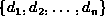
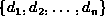
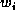
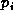
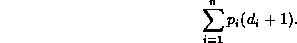

Data Structures and Algorithms
with Object-Oriented Design Patterns in Java
Data Structures and Algorithms
with Object-Oriented Design Patterns in Java
 .
Let  be the set of available denominations.
For example, the set represents the denominations
of the commonly circulated Canadian coins.
What condition(s) must the set of denominations satisfy
to ensure the greedy algorithm always finds an optimal solution?.
.
Let  be the set of available denominations.
For example, the set represents the denominations
of the commonly circulated Canadian coins.
What condition(s) must the set of denominations satisfy
to ensure the greedy algorithm always finds an optimal solution?.
| i |  |  |
| 1 | 10 | 10 |
| 2 | 6 | 6 |
| 3 | 3 | 4 |
| 4 | 8 | 9 |
| 5 | 1 | 3 |
| C=18 | ||
.
Suppose we replace the queue (line 3)
with a priority queue.
,
but this time consider what happens if
we replace the queue with a LIFO stack. and ,
but this time consider a
branch-and-bound breadth-first solver.).
For some problems the solution space
is more naturally a graph rather than a tree.
to explore
a search space that is not a tree.. to explore
a search space that is not a tree..

Hint:
Let  be the cost of the optimal binary search
tree that contains the set of keys
where
be the cost of the optimal binary search
tree that contains the set of keys
where  .
Show that
.
Show that
.
The objective is to determine how to break a given sequence of words
into lines of text of the appropriate size.
This was done either by stretching
or compressing the space between the words.
Explain why the greedy strategy always finds the optimal solution
if we stretch but do not compress the space between words.
where  is the mean and is the standard deviation
of the distribution.
Hint:
Consider the central limit theorem .
is the mean and is the standard deviation
of the distribution.
Hint:
Consider the central limit theorem .
where is the mean of the distribution.
Hint: Use the fact , where Z is an exponentially distributed random variable with mean .
.
 Copyright © 1998 by Bruno R. Preiss, P.Eng. All rights reserved.
Copyright © 1998 by Bruno R. Preiss, P.Eng. All rights reserved.